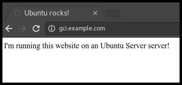

Apache is an open source web server that’s available for Linux servers free of charge.
In this tutorial we’ll be going through the steps of setting up an Apache server.
Got everything ready? Let’s move on to the next step!
Originally authored by Aden Padilla
To install Apache, install the latest meta-package apache2 by running:
sudo apt update
sudo apt install apache2
After letting the command run, all required packages are installed and we can test it out by typing in our IP address for the web server.

If you see the page above, it means that Apache has been successfully installed on your server! Let’s move on.
By default, Apache comes with a basic site (the one that we saw in the previous step) enabled. We can modify its content in /var/www/html or settings by editing its Virtual Host file found in /etc/apache2/sites-enabled/000-default.conf.
We can modify how Apache handles incoming requests and have multiple sites running on the same server by editing its Virtual Hosts file.
Today, we’re going to leave the default Apache virtual host configuration pointing to www.example.com and set up our own at gci.example.com.
So let’s start by creating a folder for our new website in /var/www/ by running
sudo mkdir /var/www/gci/
We have it named gci here but any name will work, as long as we point to it in the virtual hosts configuration file later.
Now that we have a directory created for our site, lets have an HTML file in it. Let’s go into our newly created directory and create one by typing:
cd /var/www/gci/
nano index.html
Paste the following code in the index.html file:
<html>
<head>
<title> Ubuntu rocks! </title>
</head>
<body>
<p> I'm running this website on an Ubuntu Server server!
</body>
</html>
Pretty cool, right?
Now let’s create a VirtualHost file so it’ll show up when we type in gci.example.com.
We start this step by going into the configuration files directory:
cd /etc/apache2/sites-available/
Since Apache came with a default VirtualHost file, let’s use that as a base. (gci.conf is used here to match our subdomain name):
sudo cp 000-default.conf gci.conf
Now edit the configuration file:
sudo nano gci.conf
We should have our email in ServerAdmin so users can reach you in case Apache experiences any error:
ServerAdmin yourname@example.com
We also want the DocumentRoot directive to point to the directory our site files are hosted on:
DocumentRoot /var/www/gci/
The default file doesn’t come with a ServerName directive so we’ll have to add and define it by adding this line below the last directive:
ServerName gci.example.com
This ensures people reach the right site instead of the default one when they type in gci.example.com.
Now that we’re done configuring our site, let’s save and activate it in the next step!
After setting up our website, we need to activate the virtual hosts configuration file to enable it. We do that by running the following command in the configuration file directory:
sudo a2ensite gci.conf
You should see the following output
Enabling site gci.
To activate the new configuration, you need to run:
service apache2 reload
root@ubuntu-server:/etc/apache2/sites-available#
To load the new site, we restart Apache by typing:
service apache2 reload
Now is the moment of truth, let’s type our host name in a browser.
Hooray!